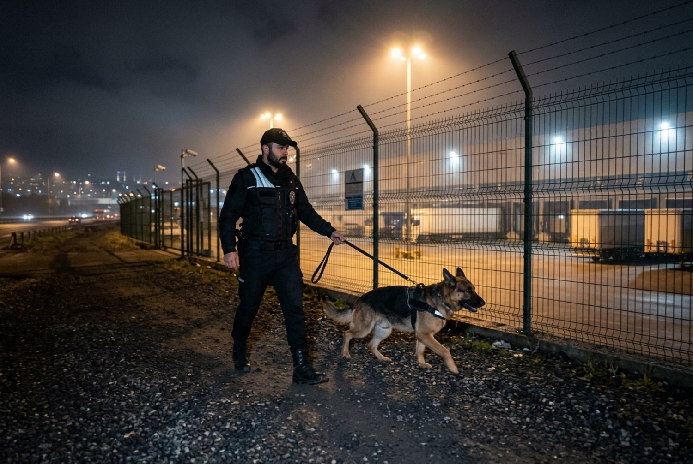
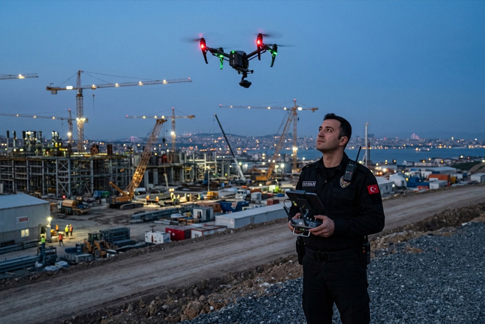
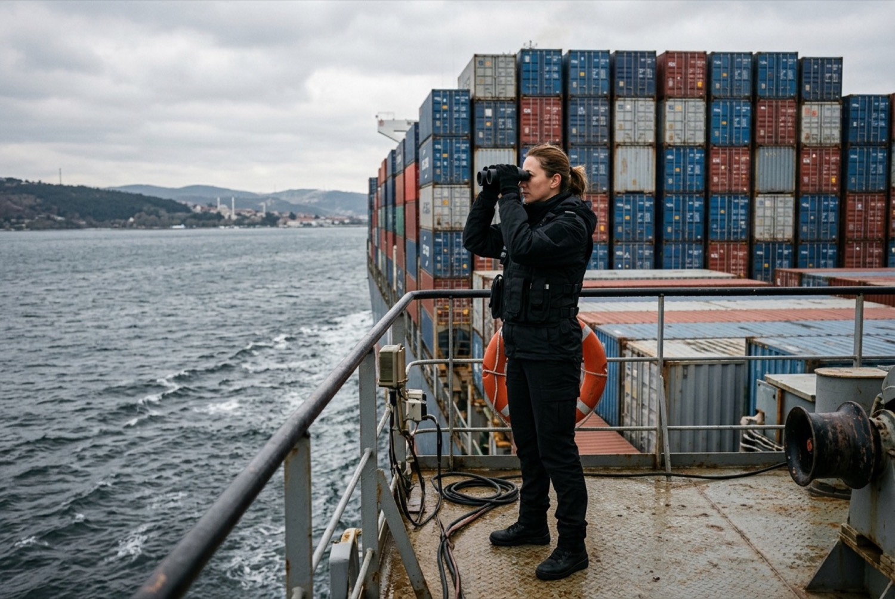
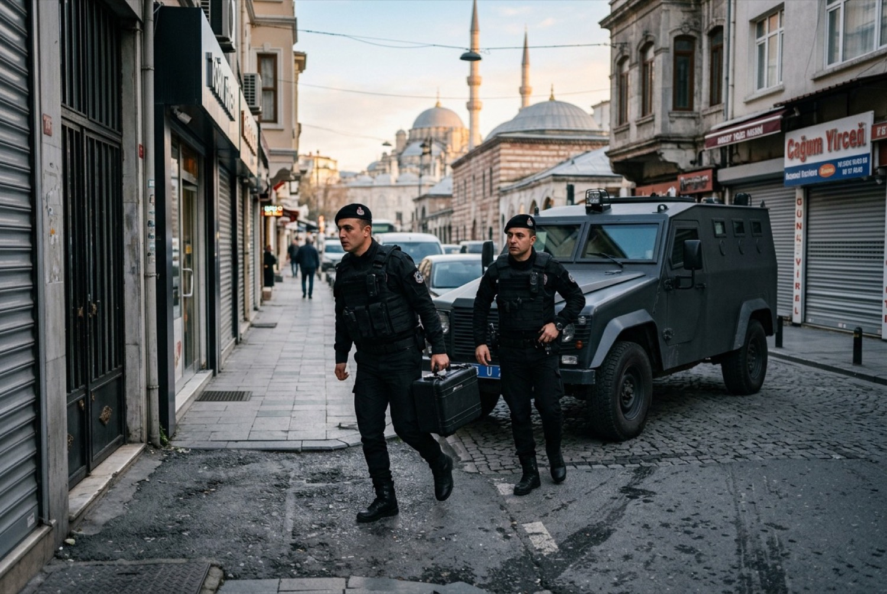
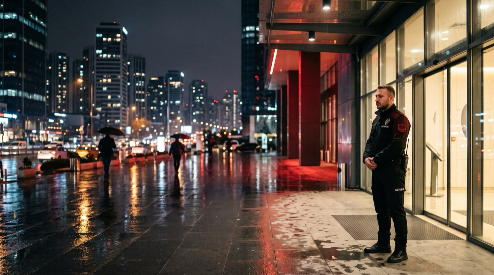
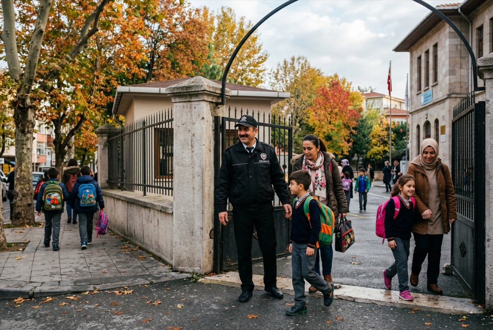
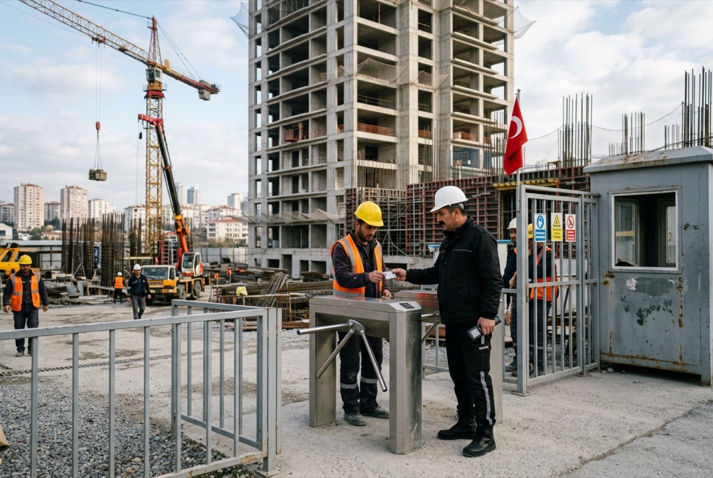

Ana sayfa / Hizmetler
Hizmetler ve kapsam
13 ana hizmet ve tesis türüne göre eklenen 4 hizmet. Hangi tesiste neyin standart, neyin seçenek olduğunu matriste; raporlama ve denetim sıklığını hizmet seviyesi tablosunda bulabilirsiniz.
Hizmet kataloğu
Tesis türünü seçerek listeyi daraltın. Her hizmetin kapsamı, kadro modeli ve raporlaması kendi sayfasında anlatılır.
17 hizmet listeleniyor

Fabrika ve sanayi tesisi güvenliği
Çevre güvenliği, araç ve personel girişi, kantar ve sevkiyat kontrolü.

Site ve rezidans güvenliği
Ziyaretçi kaydı, otopark izleme, gece devriyesi, yönetimle aylık toplantı.

AVM ve mağaza güvenliği
Kat devriyesi, kayıp önleme, çok şubeli zincirlerde tek sözleşme.

Hastane ve sağlık tesisi güvenliği
Acil servis düzeni, ziyaretçi saatleri, sağlık çalışanına şiddete karşı protokol.

Etkinlik ve organizasyon güvenliği
Dönemsel kadro, arama noktası, sahne önü bariyer ve tahliye planı.

Marina ve liman güvenliği
İskele devriyesi, tekne giriş çıkış kaydı, liman sahası erişim kontrolü.

K9 köpekli güvenlik
Eğitimli köpek ve görevliyle geniş alan devriyesi, arama desteği.

Drone ile gözetim
Geniş sahalarda havadan çevre kontrolü; uçuş izni keşifte değerlendirilir.

e-PMS personel yönetim sistemi
Görevli belgeleri, kart süreleri, vardiya planı ve eğitim kayıtları tek sistemde.

RDN Ress Dijital Nöbet
Devriye noktası okutma, fotoğraflı olay tutanağı, müşteri portalında günlük rapor.

Yük gemisi korumacılığı
Limanda bekleyen ve yük boşaltan gemilerde erişim kontrolü ve nöbet.

Zırhlı taşımacılık
Değerli eşya ve nakit taşımada silahlı ekip ve rota planı.

Maden koruma
Saha girişi, patlayıcı deposu nöbeti, iş makinesi ve malzeme kontrolü.

Plaza ve iş merkezi güvenliği
Resepsiyon, turnike, kartlı geçiş ve ziyaretçi kartı yönetimi.

VIP yakın koruma
Yönetici ve misafir koruması, araç eşliği, etkinlik refakati.

Okul ve kampüs güvenliği
Giriş ve çıkış saatleri, veli ve servis düzeni, kampüs devriyesi.

Şantiye güvenliği
Malzeme sahası, iş makinesi parkı, gece nöbeti ve araç kaydı.
Devriye ve kamera izleme koordinasyonu tüm hizmetlere eklenebilir; ayrıntısı aşağıdaki matriste.
Sektör ve hizmet matrisi
Satırlar tesis türü, sütunlar hizmet bileşeni. Telefonda tabloyu yana kaydırabilirsiniz. “Standart” teklifte varsayılan olarak yer alır; “Seçenek” keşifte ihtiyaca göre eklenir.
| Tesis türü | Sabit nokta | Devriye | Kamera izleme | Kadın görevli | Silahlı görev | K9 | Drone | RDN raporu |
|---|---|---|---|---|---|---|---|---|
| Konut | Standart | Standart | Seçenek | Seçenek | Yok | Seçenek | Yok | Standart |
| Sanayi | Standart | Standart | Standart | Seçenek | Seçenek | Seçenek | Seçenek | Standart |
| Sağlık | Standart | Seçenek | Standart | Standart | Yok | Yok | Yok | Standart |
| Perakende | Standart | Seçenek | Standart | Standart | Yok | Yok | Yok | Standart |
| Etkinlik | Standart | Standart | Seçenek | Standart | Yok | Seçenek | Seçenek | Standart |
| Deniz ve liman | Standart | Standart | Seçenek | Yok | Seçenek | Standart | Seçenek | Standart |
| Maden | Standart | Standart | Seçenek | Yok | Standart | Seçenek | Standart | Standart |
| Özel ve kurumsal | Standart | Seçenek | Standart | Seçenek | Seçenek | Yok | Yok | Standart |
Hizmet seviyeleri
Raporlama, denetim ve hesap yönetimi sözleşmeye yazılır. Aşağıdaki üç seviye örnek yapıdır; kesin içerik teklifte sizinle birlikte belirlenir.
| Temel | Kurumsal | Kritik tesis | |
|---|---|---|---|
| Raporlama sıklığı | Aylık hizmet raporu | Haftalık özet ve aylık rapor | Her vardiya sonu rapor ve aylık rapor |
| Saha denetimi | Ayda 1 | Ayda 2 | Haftada 1, ayda en az biri gece |
| Hesap yöneticisi | Bölge müdürlüğü ekibi | Adı yazılı hesap yöneticisi | Hesap yöneticisi ve yedeği |
| Müşteri portalı | Aylık rapor erişimi | Devriye, olay ve talep takibi | Tam erişim ve olayda anlık SMS |
| Tatbikat | Yılda 1 | Yılda 2 | Üç ayda 1 |
| Hizmet içi eğitim | Yasal zorunlu eğitimler | Tesise özel eğitim eklenir | Tesise ve role özel eğitim |
| Görevli değişikliği | Bölge müdürlüğü planlar | Size önceden bildirilir | Sizin onayınızla yapılır |
Belgeler
Satınalma dosyanız için gereken belgeler sözleşme öncesinde e-posta ile paylaşılır. Faaliyet izni numarası ve poliçe ayrıntıları belgelerin üzerindedir.
Kurumsal kataloğumuz hizmet modelini, metodolojiyi ve referansları tek dosyada toplar.
- Özel güvenlik faaliyet izniİçişleri Bakanlığı, 5188 sayılı KanunTalep üzerine paylaşılır
- Personel listesi ve ÖGKK bilgileriKart numarası ve geçerlilik tarihiyleSözleşmeyle birlikte
- Mesleki sorumluluk sigortası poliçesiGüncel dönemTalep üzerine paylaşılır
- ISO kalite belgeleriKalite yönetim sistemiTalep üzerine paylaşılır
- SGK ve vergi borcu yoktur yazılarıİhale ve satınalma dosyası içinTalep üzerine paylaşılır
- Vergi levhası ve imza sirküleriTicari evrakTalep üzerine paylaşılır
Ress Group hizmetleri
RESS Koruma bir Ress Group kuruluşudur. Güvenlikle birlikte tesis yönetimi hizmetlerini de tek sözleşmede almak isterseniz grup şirketlerimiz aynı bölge ağıyla çalışır.
- Entegre tesis yönetimi
- Profesyonel temizlik
- Teknik bakım
- Bahçe ve peyzaj
- Haşere kontrol
- Temizlik makineleri